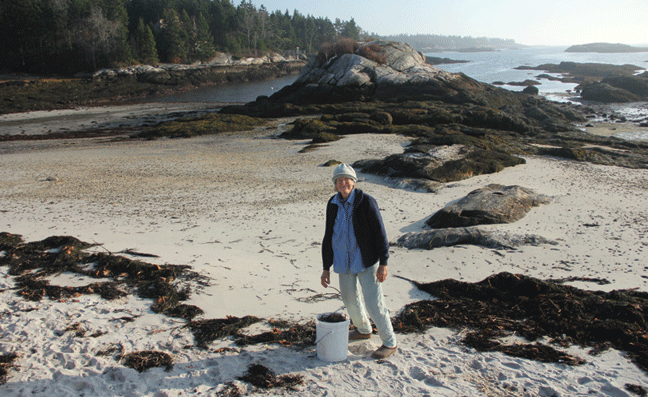
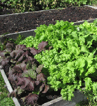
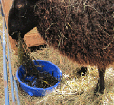
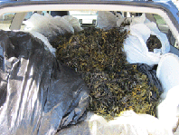

|  | ||||||||||||
|  |  | |||||||||||
| Fun at the ocean... Seaweed I collect seaweed at the beach to mulch my gardens, add to compost piles and feed the sheep. Seaweed improves the fertility of the soil, and the vegetables are delicious. I fill my trusty old Subaru full of bags of this ocean treasure and haul it home. |
||||||||||||
|  | ||||||||||||
| Rosie’s adventure A walk with Rosie on the Pemaquid Beach, Saturday afternoon December 19 turned into a surreal water adventure. We strolled down the beach to the east side and then back to the west having Rosie practice “come” between us. Then, Rosie saw a 4’x8’ sheet of 2” blue insulation board floating at the shore’s edge. My husband Rob couldn’t believe it when he saw Rosie jump on the insulation board. The energy of her jump pushed her away from shore really fast. He called her to come, but she wouldn’t jump off the board. I knew Rosie would not leave the board. She is a dog who only gets her feet wet, and does not like the water. As Rosie quickly floated further out in the bay toward open water, we realized we needed help if we were to see Rosie again. It was hard to believe what we were seeing was real! I ran out of the park to the road, where a motorist stopped and let me use his cell phone to call 911. Bristol Fire and Rescue responded quickly, and had an inflatable Zodiak boat. As the rescue boat approached, Rosie was frightened, barked at them and would not jump off the insulation board into their boat. So, with the boat, they pushed the board over to the shore where Rosie could jump onto the shore. Rosie was fine after her adventure, but it took us time to recover! |
||||||||||||